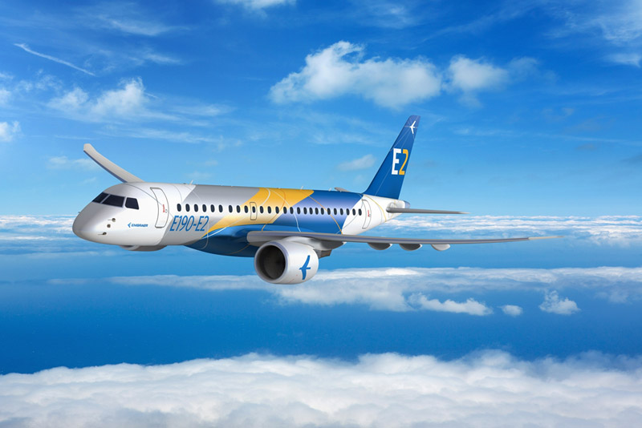

01
Alcance, velocidade e capacidade
A tabela 1 apresenta a explicação de cada categoria:
| Tipo | Significado | Exemplo |
|---|---|---|
| CTOL (E2) | Conventional Takeoff and Landing (pista obrigatória) | Aviões comerciais |
| VTOL (H125) | Vertical Takeoff and Landing | Helicópteros |
| eVTOL (EVE) | Electric VTOL | Futuros air taxis |
| STOL (Cessna 185) | Short Takeoff and Landing | Bush planes |

E2

H125

EVE

CESSNA 185
A tabela 2 apresenta o alcance, velocidade e capacidade de cada aeronave:
| Tipo | Alcance | Velocidade de cruzeiro | Capacidade de passageiros |
|---|---|---|---|
| CTOL | 5.556 km | Aproximadamente 870 km/h | 146 passageiros |
| VTOL | 630 km | Aproximadamente 246 km/h | 1 piloto + 5 a 6 passageiros |
| eVTOL | 100 km | Aproximadamente 110 a 220 km/h | 1 piloto + 4 passageiros |
| STOL | 1.330 km | Aproximadamente 268 km/h | 1 piloto + 5 passageiros |
02
Tipo de propulsão de cada aeronave
A tabela 3 apresenta o tipo de propulsão de cada aeronave:
| Tipo | Propulsão |
|---|---|
| CTOL | Turbofan de alto bypass |
| VTOL | Turboshaft (turboeixo) |
| eVTOL | Distributed Electric Propulsion (DEP) |
| STOL | Pistão (motor a combustão interna) |
03
Ambiente operacional predominante
| Aeronave | Ambiente operacional predominante |
|---|---|
| Embraer E195-E2 (família E2) | Operações comerciais regionais e de média distância, conectando cidades e hubs em aeroportos com infraestrutura completa e pistas pavimentadas. |
| Cessna 185 Skywagon | Operações utilitárias e em regiões remotas, frequentemente em pistas curtas, não pavimentadas ou áreas isoladas, usadas para transporte, carga e missões especiais. |
| Airbus H125 | Operações de helicóptero utilitário em ambientes diversos, como resgate, policiamento, transporte executivo, offshore e áreas montanhosas, podendo operar sem necessidade de pista. |
| eVTOL da Eve Air Mobility | Operações de Mobilidade Aérea Urbana (UAM), realizando voos curtos dentro de cidades entre vertiportos, focadas em transporte rápido de passageiros. |
04
Desafios regulatórios associados
| Aeronave | Principais desafios regulatórios |
|---|---|
| E195-E2 | Regulamentação bem estabelecida, pois é um avião comercial convencional. Os desafios concentram-se em certificação de novas tecnologias (motores mais eficientes, aviônicos) e certificação operacional para companhias aéreas. |
| Cessna 185 | Regulamentação tradicional e consolidada, pois é uma aeronave a pistão clássica. Os desafios regulatórios são relativamente baixos e envolvem apenas certificação, manutenção e operação conforme regras de aviação geral. |
| H125 | Regulamentação também consolidada para helicópteros, mas existem desafios adicionais relacionados a operações especiais, como resgate, policiamento, operações offshore e voos em baixa altitude em áreas urbanas. |
| eVTOL da Eve | Apresenta os maiores desafios regulatórios, pois envolve novas tecnologias e novos conceitos operacionais. Reguladores ainda estão desenvolvendo normas para certificação de aeronaves eVTOL, vertiportos, gestão de tráfego urbano e integração com drones. |
Aeronaves tradicionais como o Cessna 185, H125 e E2 enfrentam poucos desafios regulatórios porque operam dentro de um sistema já consolidado. Já os eVTOL de UAM, como o da Eve, enfrentam desafios muito maiores, pois exigem novas regras para certificação, infraestrutura urbana, gestão do espaço aéreo e integração com drones.
05
Implicações para vertiportos ou aeródromos
| Aeronave | Infraestrutura principal | Escala da infraestrutura |
|---|---|---|
| E2 | Aeroportos comerciais | Grande |
| Cessna 185 | Aeródromos pequenos | Pequena |
| H125 | Helipontos | Média |
| Eve eVTOL | Vertiportos | Pequena e urbana |
Cada aeronave exige um tipo diferente de infraestrutura. Aviões comerciais como o E2 dependem de aeroportos completos, enquanto aeronaves utilitárias como o Cessna 185 podem operar em aeródromos simples. Helicópteros como o H125 utilizam helipontos, e os eVTOL da Eve representam um novo paradigma, operando em vertiportos urbanos projetados para mobilidade aérea urbana.